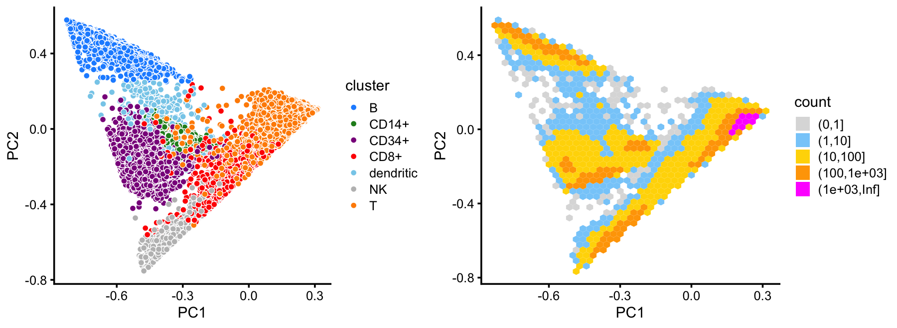

Identify clusters in mixture of FACS-purified PBMC data using topic model
Peter Carbonetto
Last updated: 2020-11-22
Checks: 7 0
Knit directory: single-cell-topics/analysis/
This reproducible R Markdown analysis was created with workflowr (version 1.6.2.9000). The Checks tab describes the reproducibility checks that were applied when the results were created. The Past versions tab lists the development history.
Great! Since the R Markdown file has been committed to the Git repository, you know the exact version of the code that produced these results.
Great job! The global environment was empty. Objects defined in the global environment can affect the analysis in your R Markdown file in unknown ways. For reproduciblity it’s best to always run the code in an empty environment.
The command set.seed(1) was run prior to running the code in the R Markdown file. Setting a seed ensures that any results that rely on randomness, e.g. subsampling or permutations, are reproducible.
Great job! Recording the operating system, R version, and package versions is critical for reproducibility.
Nice! There were no cached chunks for this analysis, so you can be confident that you successfully produced the results during this run.
Great job! Using relative paths to the files within your workflowr project makes it easier to run your code on other machines.
Great! You are using Git for version control. Tracking code development and connecting the code version to the results is critical for reproducibility.
The results in this page were generated with repository version 90d201b. See the Past versions tab to see a history of the changes made to the R Markdown and HTML files.
Note that you need to be careful to ensure that all relevant files for the analysis have been committed to Git prior to generating the results (you can use wflow_publish or wflow_git_commit). workflowr only checks the R Markdown file, but you know if there are other scripts or data files that it depends on. Below is the status of the Git repository when the results were generated:
Ignored files:
Ignored: data/droplet.RData
Ignored: data/pbmc_68k.RData
Ignored: data/pbmc_purified.RData
Ignored: data/pulseseq.RData
Ignored: output/droplet/diff-count-droplet.RData
Ignored: output/droplet/fits-droplet.RData
Ignored: output/droplet/rds/
Ignored: output/pbmc-68k/fits-pbmc-68k.RData
Ignored: output/pbmc-68k/rds/
Ignored: output/pbmc-purified/fits-pbmc-purified.RData
Ignored: output/pbmc-purified/rds/
Ignored: output/pulseseq/diff-count-pulseseq.RData
Ignored: output/pulseseq/fits-pulseseq.RData
Ignored: output/pulseseq/rds/
Note that any generated files, e.g. HTML, png, CSS, etc., are not included in this status report because it is ok for generated content to have uncommitted changes.
These are the previous versions of the repository in which changes were made to the R Markdown (analysis/clusters_purified_pbmc.Rmd) and HTML (docs/clusters_purified_pbmc.html) files. If you’ve configured a remote Git repository (see ?wflow_git_remote), click on the hyperlinks in the table below to view the files as they were in that past version.
| File | Version | Author | Date | Message |
|---|---|---|---|---|
| Rmd | 90d201b | Peter Carbonetto | 2020-11-22 | workflowr::wflow_publish(“clusters_purified_pbmc.Rmd”) |
| html | 015e254 | Peter Carbonetto | 2020-11-22 | Fixed up some of the text and plots in clusters_purified_pbmc analysis. |
| Rmd | b512864 | Peter Carbonetto | 2020-11-22 | workflowr::wflow_publish(“clusters_purified_pbmc.Rmd”) |
| html | 7cbd5e9 | Peter Carbonetto | 2020-11-22 | First build of clusters_purified_pbmc page. |
| Rmd | 4e32884 | Peter Carbonetto | 2020-11-22 | workflowr::wflow_publish(“clusters_purified_pbmc.Rmd”) |
Here we perform PCA on the topic proportions to identify clusters in the mixture of FACS-purified PBMC data sets.
Load the packages used in the analysis below, as well as additional functions that we will use to generate some of the plots.
library(Matrix)
library(dplyr)
library(fastTopics)
library(Rtsne)
library(uwot)
library(ggplot2)
library(cowplot)
source("../code/plots.R")Load the count data.
load("../data/pbmc_purified.RData")Load the \(K = 6\) Poisson NMF model fit.
fit <- readRDS(file.path("../output/pbmc-purified/rds",
"fit-pbmc-purified-scd-ex-k=6.rds"))$fitIdentify clusters from principal components
From the PCs, we define clusters for B-cells, CD14+ cells and CD34+ cells. The remaining cells are assigned to the U cluster (“U” for “unknown”).
pca <- prcomp(poisson2multinom(fit)$L)$x
n <- nrow(pca)
x <- rep("U",n)
pc1 <- pca[,1]
pc2 <- pca[,2]
pc3 <- pca[,3]
pc4 <- pca[,4]
pc5 <- pca[,5]
x[pc2 > 0.25] <- "B"
x[pc3 < -0.2 & pc4 < 0.2] <- "CD34+"
x[(pc4 + 0.1)^2 + (pc5 - 0.8)^2 < 0.07] <- "CD14+"Next, we define an NK cells from the top 2 PCs of the unknown cells.
rows <- which(x == "U")
n <- length(rows)
fit2 <- select(poisson2multinom(fit),loadings = rows)
pca <- prcomp(fit2$L)$x
y <- rep("U",n)
pc1 <- pca[,1]
pc2 <- pca[,2]
y[pc1 < -0.3 & 1.1*pc1 < -pc2 - 0.57] <- "NK"
x[rows] <- yAmong the remaining cells, there is a much less distinct cluster of CD8+ cells, and the rest are labeled as T-cells.
rows <- which(x == "U")
n <- length(rows)
fit2 <- select(poisson2multinom(fit),loadings = rows)
pca <- prcomp(fit2$L)$x
y <- rep("T",n)
pc1 <- pca[,1]
pc2 <- pca[,2]
y[pc1 < 0.25 & pc2 < -0.15] <- "CD8+"
x[rows] <- yThis clustering corresponds closely to the Zheng et al (2017) FACS cell populations:
samples$cluster <- factor(x)
with(samples,table(celltype,cluster))
# cluster
# celltype B CD14+ CD34+ CD8+ NK T
# CD19+ B 10073 0 0 8 0 4
# CD14+ Monocyte 8 2420 0 138 0 46
# CD34+ 352 536 8182 141 4 17
# CD4+ T Helper2 0 0 8 49 1 11155
# CD56+ NK 0 0 17 86 8279 3
# CD8+ Cytotoxic T 0 0 0 3093 93 7023
# CD4+/CD45RO+ Memory 0 0 20 343 0 9861
# CD8+/CD45RA+ Naive Cytotoxic 3 0 0 53 2 11895
# CD4+/CD45RA+/CD25- Naive T 1 0 8 30 1 10439
# CD4+/CD25 T Reg 2 0 2 25 0 10234This close correspondence is also apparent from PCA plots:
set.seed(1)
facs_colors <- c("dodgerblue", # B-cells
"forestgreen", # CD14+
"darkmagenta", # CD34+
"firebrick", # T helper cells
"gray", # NK cells
"tomato", # cytotoxic T-cells
"yellow", # memory T-cells
"magenta", # naive cytotoxic
"darkorange", # naive T-cells
"gold") # regulatory T-cells
x <- with(samples,cluster == "T" | cluster == "CD8+")
rows1 <- sample(which(!x))
rows2 <- sample(which(x))
p1 <- pca_plot(select(poisson2multinom(fit),loadings = rows1),
fill = samples[rows1,"celltype"]) +
scale_fill_manual(values = facs_colors) +
labs(fill = "FACS subtype")
p2 <- pca_plot(select(poisson2multinom(fit),loadings = rows2),
fill = samples[rows2,"celltype"]) +
scale_fill_manual(values = facs_colors) +
labs(fill = "FACS subtype")
plot_grid(p1,p2)
| Version | Author | Date |
|---|---|---|
| 015e254 | Peter Carbonetto | 2020-11-22 |
Structure plot
The structure plot summarizes the topic proportions in each of these 6 subsets:
set.seed(1)
topic_colors <- c("gold","forestgreen","dodgerblue","gray","darkmagenta",
"violet")
topics <- c(5,3,2,4,1,6)
rows <- sort(c(sample(which(samples$cluster == "B"),1000),
sample(which(samples$cluster == "CD14+"),300),
sample(which(samples$cluster == "CD34+"),500),
sample(which(samples$cluster == "CD8+"),400),
sample(which(samples$cluster == "NK"),500),
sample(which(samples$cluster == "T"),1000)))
p3 <- structure_plot(select(poisson2multinom(fit),loadings = rows),
grouping = samples[rows,"cluster"],
topics = topics,colors = topic_colors[topics],
perplexity = c(70,30,30,30,30,70),
n = Inf,gap = 50,num_threads = 4,verbose = FALSE)
print(p3)
set.seed(5)
rows <- which(with(samples,
cluster == "B" |
cluster == "CD14+" |
cluster == "CD34+"))
rows <- sample(rows,2000)
fit2 <- select(poisson2multinom(fit),loadings = rows)
p3 <- pca_plot(fit2,fill = samples[rows,"cluster"])Run t-SNE, then plot the 2-d embedding.
tsne <- Rtsne(fit2$L,dims = 2,pca = FALSE,normalize = FALSE,perplexity = 100,
theta = 0.1,max_iter = 1000,eta = 200,verbose = TRUE)
tsne$x <- tsne$Y
colnames(tsne$x) <- c("tsne1","tsne2")
p4 <- pca_plot(fit2,out.pca = tsne,fill = samples[rows,"cluster"])
# Read the 2000 x 6 data matrix successfully!
# OpenMP is working. 1 threads.
# Using no_dims = 2, perplexity = 100.000000, and theta = 0.100000
# Computing input similarities...
# Building tree...
# Done in 0.56 seconds (sparsity = 0.184441)!
# Learning embedding...
# Iteration 50: error is 56.399649 (50 iterations in 1.07 seconds)
# Iteration 100: error is 50.071582 (50 iterations in 0.65 seconds)
# Iteration 150: error is 49.293280 (50 iterations in 0.61 seconds)
# Iteration 200: error is 49.002482 (50 iterations in 0.61 seconds)
# Iteration 250: error is 48.846158 (50 iterations in 0.62 seconds)
# Iteration 300: error is 0.517416 (50 iterations in 0.77 seconds)
# Iteration 350: error is 0.376907 (50 iterations in 0.76 seconds)
# Iteration 400: error is 0.330721 (50 iterations in 0.75 seconds)
# Iteration 450: error is 0.309748 (50 iterations in 0.81 seconds)
# Iteration 500: error is 0.297955 (50 iterations in 0.71 seconds)
# Iteration 550: error is 0.290376 (50 iterations in 0.71 seconds)
# Iteration 600: error is 0.285103 (50 iterations in 0.75 seconds)
# Iteration 650: error is 0.281319 (50 iterations in 0.69 seconds)
# Iteration 700: error is 0.278406 (50 iterations in 0.69 seconds)
# Iteration 750: error is 0.276144 (50 iterations in 0.72 seconds)
# Iteration 800: error is 0.274312 (50 iterations in 0.71 seconds)
# Iteration 850: error is 0.272863 (50 iterations in 0.73 seconds)
# Iteration 900: error is 0.271622 (50 iterations in 0.72 seconds)
# Iteration 950: error is 0.270668 (50 iterations in 0.70 seconds)
# Iteration 1000: error is 0.269853 (50 iterations in 0.70 seconds)
# Fitting performed in 14.49 seconds.Run UMAP, then plot the 2-d embedding.
out.umap <- umap(fit2$L,n_neighbors = 30,metric = "euclidean",n_epochs = 1000,
min_dist = 0.1,scale = "none",learning_rate = 1,
verbose = TRUE)
# 23:09:18 UMAP embedding parameters a = 1.577 b = 0.8951
# 23:09:18 Read 2000 rows and found 6 numeric columns
# 23:09:18 Using FNN for neighbor search, n_neighbors = 30
# 23:09:18 Commencing smooth kNN distance calibration using 2 threads
# 23:09:18 Found 2 connected components, falling back to 'spca' initialization with init_sdev = 1
# 23:09:18 Initializing from PCA
# 23:09:18 PCA: 2 components explained 96.47% variance
# 23:09:18 Commencing optimization for 1000 epochs, with 75234 positive edges
# 23:09:23 Optimization finished
out.umap <- list(x = out.umap)
colnames(out.umap$x) <- c("umap1","umap2")
p5 <- pca_plot(fit2,out.pca = out.umap,fill = samples[rows,"cluster"])
plot_grid(p3,p4,p5,nrow = 1)
| Version | Author | Date |
|---|---|---|
| 015e254 | Peter Carbonetto | 2020-11-22 |
TO DO:
Compare inter-cluster and inter-topic total variation distances, as well as total variation distances between FACS cell populations.
Create scatterplots comparing single-cell likelihoods using a “hard” clustering (either my own clustering, or the FACS-sorted cell populations) and using topic model.
sessionInfo()
# R version 3.6.2 (2019-12-12)
# Platform: x86_64-apple-darwin15.6.0 (64-bit)
# Running under: macOS Catalina 10.15.7
#
# Matrix products: default
# BLAS: /Library/Frameworks/R.framework/Versions/3.6/Resources/lib/libRblas.0.dylib
# LAPACK: /Library/Frameworks/R.framework/Versions/3.6/Resources/lib/libRlapack.dylib
#
# locale:
# [1] en_US.UTF-8/en_US.UTF-8/en_US.UTF-8/C/en_US.UTF-8/en_US.UTF-8
#
# attached base packages:
# [1] stats graphics grDevices utils datasets methods base
#
# other attached packages:
# [1] cowplot_1.0.0 ggplot2_3.3.0 uwot_0.1.8 Rtsne_0.15
# [5] fastTopics_0.3-184 dplyr_0.8.3 Matrix_1.2-18
#
# loaded via a namespace (and not attached):
# [1] ggrepel_0.9.0 Rcpp_1.0.5 lattice_0.20-38
# [4] FNN_1.1.3 tidyr_1.0.0 prettyunits_1.1.1
# [7] assertthat_0.2.1 zeallot_0.1.0 rprojroot_1.3-2
# [10] digest_0.6.23 R6_2.4.1 backports_1.1.5
# [13] MatrixModels_0.4-1 evaluate_0.14 coda_0.19-3
# [16] httr_1.4.2 pillar_1.4.3 rlang_0.4.5
# [19] progress_1.2.2 lazyeval_0.2.2 data.table_1.12.8
# [22] irlba_2.3.3 SparseM_1.78 whisker_0.4
# [25] rmarkdown_2.3 labeling_0.3 stringr_1.4.0
# [28] htmlwidgets_1.5.1 munsell_0.5.0 compiler_3.6.2
# [31] httpuv_1.5.2 xfun_0.11 pkgconfig_2.0.3
# [34] mcmc_0.9-6 htmltools_0.4.0 tidyselect_0.2.5
# [37] tibble_2.1.3 workflowr_1.6.2.9000 quadprog_1.5-8
# [40] viridisLite_0.3.0 crayon_1.3.4 withr_2.1.2
# [43] later_1.0.0 MASS_7.3-51.4 grid_3.6.2
# [46] jsonlite_1.6 gtable_0.3.0 lifecycle_0.1.0
# [49] git2r_0.26.1 magrittr_1.5 scales_1.1.0
# [52] RcppParallel_4.4.2 stringi_1.4.3 farver_2.0.1
# [55] fs_1.3.1 promises_1.1.0 vctrs_0.2.1
# [58] tools_3.6.2 glue_1.3.1 purrr_0.3.3
# [61] hms_0.5.2 yaml_2.2.0 colorspace_1.4-1
# [64] plotly_4.9.2 knitr_1.26 quantreg_5.54
# [67] MCMCpack_1.4-5